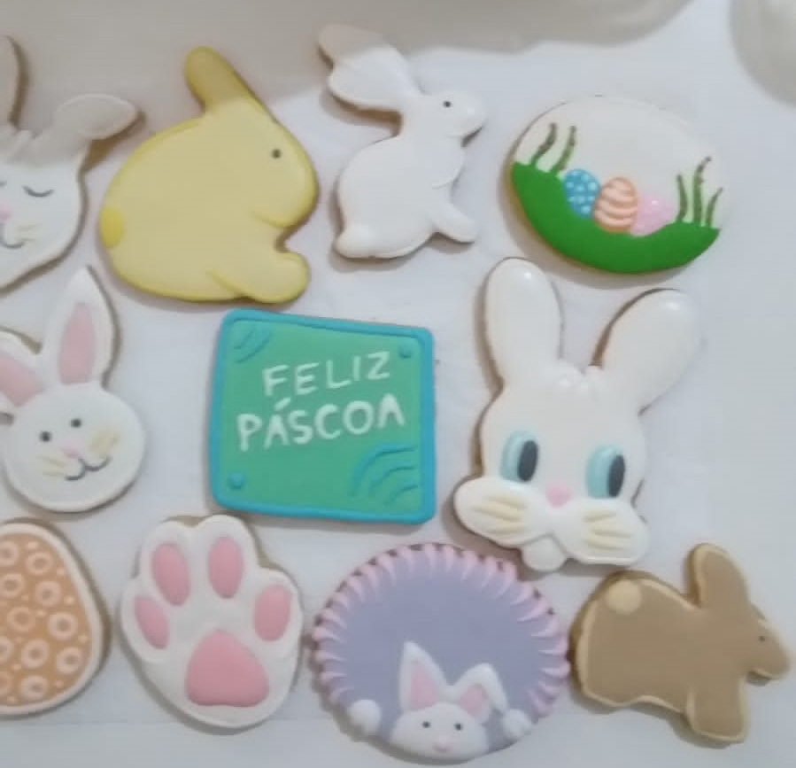
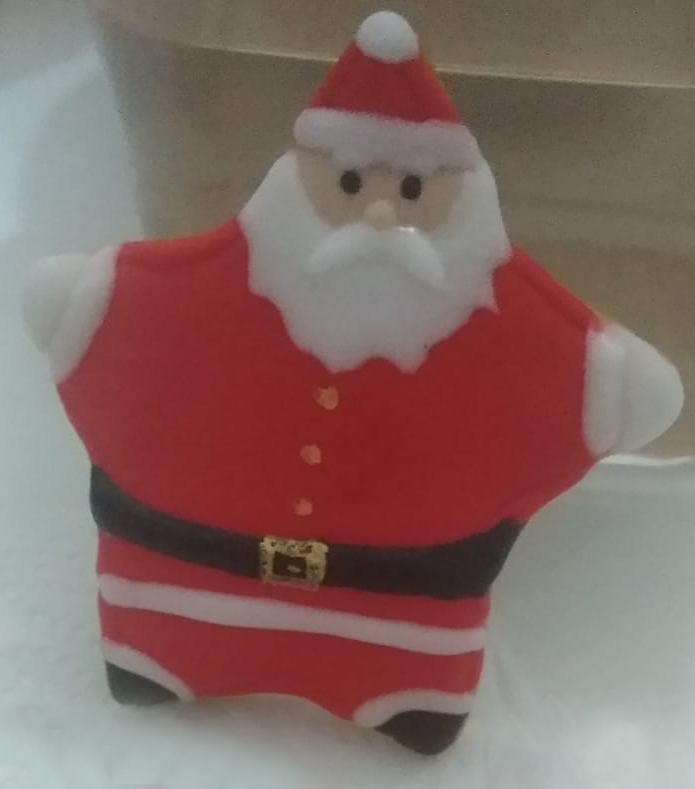

Nossos Produtos
Produtos 100% artesanais e caseiros, são vendidos por cento, unitários embalados individualmente ou ainda em pacotinhos com 3, 5 ou 10 unidades de acordo com sua preferência.
- 
- 
Produtos 100% artesanais e caseiros, são vendidos por cento, unitários embalados individualmente ou ainda em pacotinhos com 3, 5 ou 10 unidades de acordo com sua preferência.